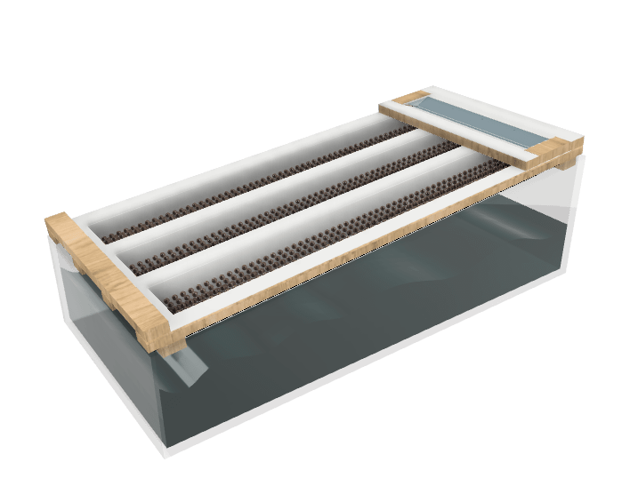

fabacademy
week 1-5
week 1: principles & practices

learning outcomes: The first week was about project management and gives us an overview about the whole fabacademy – tasks, challenges, insights, examples, websites and helps us to understand where everything is and what it contains. Also we got to understand how to use: git push, git check out master, Git pull, Git merge develop, Git push, Git´s bible: steps and Git pull: downloads the latest changes, current claod repository to the local one. Also we learned more about different versions of control system (VCS), which contains three different: local, distributed and centralized.
reflection: The first week was nice for me because I could order first all my files, pictures etc. and also refresh my whole website and git push everything what I have to make it online. Also I changed a bid my design and set everything in right folders. I feel like I need to learn a bid more about git bash etc., because I don’t really understand the difference between all the apps.
tasks: This week the tasks where first to ubload a picture to color up the fabacademy website, also to create new pages on our website which contains the fabacademy pages. After checking other websites of the previous weeks I liked the most the websites of Krzysztof Wronsk, because his reflection/oview was very clear, not one page every week, which makes it easier to read. Also I liked the website reflection of David wyss, which is neat, minimalist and also shows some specific pictures. The third I liked the website of Ines Burdiles, which includes a nice overview and also her feelings and facts about the week and the date.
week 2: computer-aided design
learning outcomes: We learned many things this class about what is CAD, what is the difference between vector and pixel pictures, colours and the difference between mesh and nurbs modelling and which tools we could use. CAD stands for creation, modification, analysis and optimization of design, where computers are basically used for atomisation, calculating and communicating. If you upload pictures the GPU transfers the pixels into a presentation mode. Also vectorized pictures/graphics. Vectorized pictures can just be made from computers. So pixels are the smallest unit of bidmap images and for example a normal picture contains normally around 20.000 pixels. There it would be good also to understand the word resolution, which is the product of the width and height of a digital image expressed in pixels. You can have different colar spaces like prophoto RGB, Adobe RGB, CMYK and sRGB. Also for example all mobile phones have the same photographic sensor but apple is good in translating an image in a presentation. You can have different kind of picture editor programs and also programs for creating vector files/pictures/ animations. Like “gimp”, “krita” are good for creating files like photoshop, “inscape”, “coral” and “vectr” are opensource too and are like adobe illustruator. And “Blender” for example is a software for animation, talk or be part of the community where you can ask questions and discuss with other people about thoughts and problems and also it’s a tool to relate the real scene or 2D picture to the digital one, which could be 3D. When 3d modelling you can have different shapes/methods like nurbs and mesh modelling. “Nurbs” are mathematical model used in computer graphics to generate curves/surfaces (instead of x and y --> you use v and u), but its not very accurate and not useful for digital fabrication. Mesh modelling is a collection of vertices, edges and faces (geometric forms) and can be used for exact shapes. “Generative designs in not about designing, it is about designing the system in designs”
reflection: This week I was a bid confused and stressed about how to combine my master approach with the fabacademy challenges and tasks, but now I would like to focus much more and think of different options about the tasks I would like to make and what I what to take of the fabacademy.


tasks: I decided to make a 3D model from my hydroponic system on my balcony. So First i make my 3D model with fusion, which I never used before, because in my past I used the most the program called solidworks and rendered it with blender. For the next task I made a picture from my terrasse and of the possible position for the hydroponicsystem and added it at the picture and added some vector plants and water on the poster with illustrator. In the pictures you can see my personal project (builing a low tech hydroponic system) and the 3D model as a rendering and on my terase with plants.

week 3: computer controlled cutting
learning outcomes
reflection
tasks
week 4: electronics production
learning outcomes
reflection
tasks
week 5: 3D printing & scanning
learning outcomes
reflection
tasks
FABACADEMY